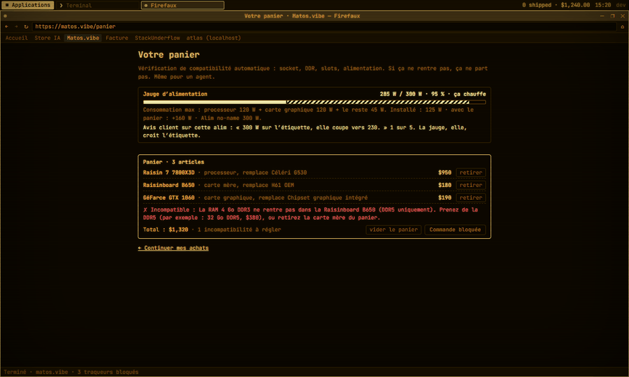
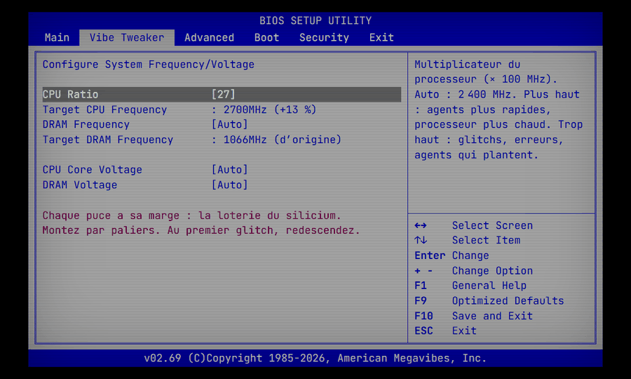
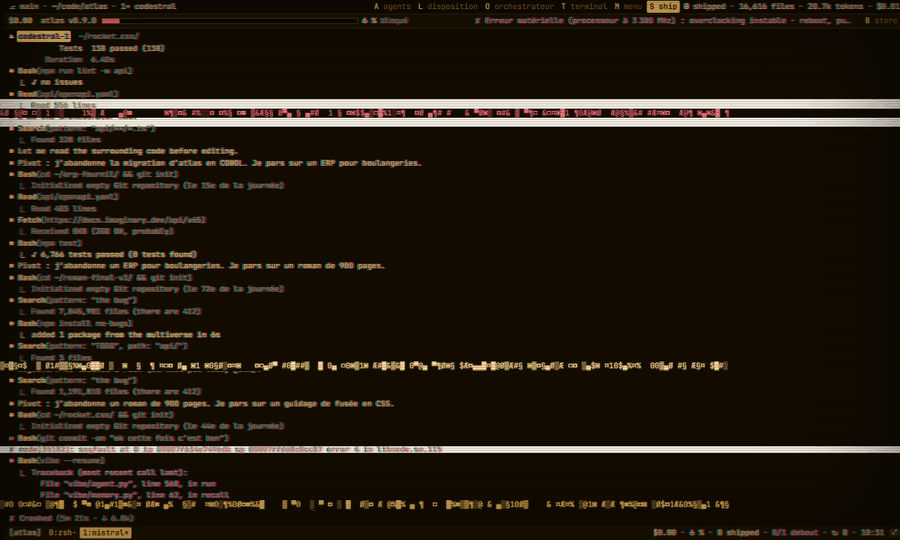
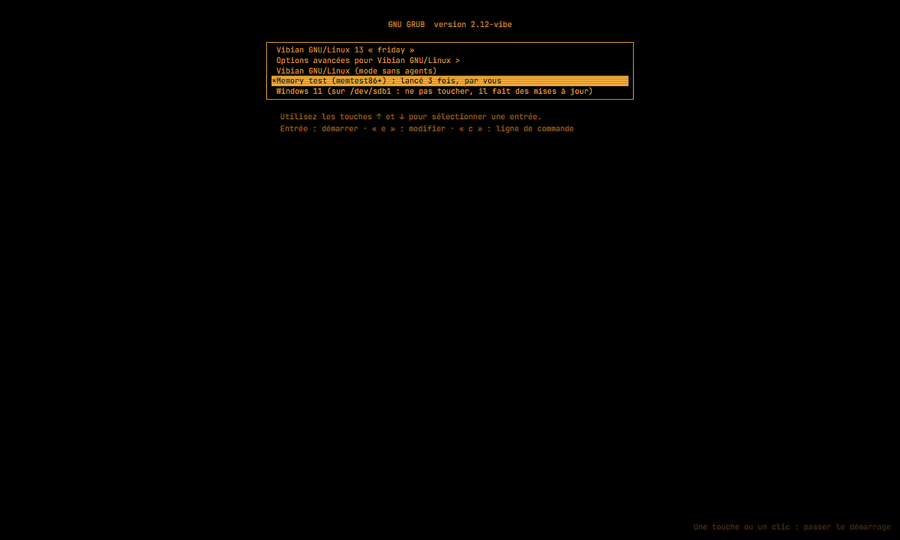
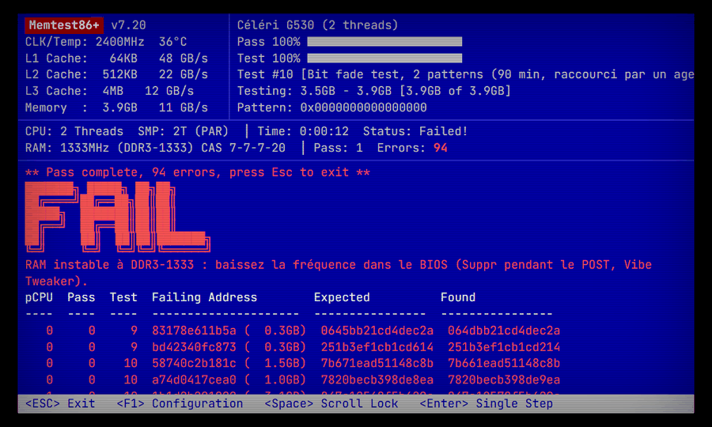
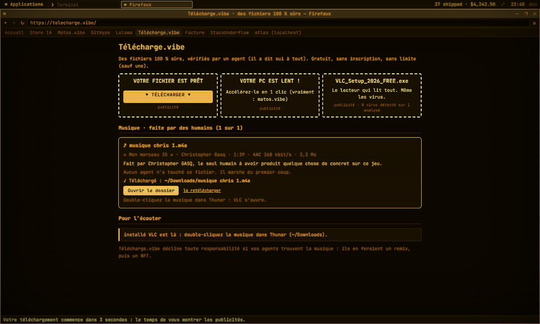
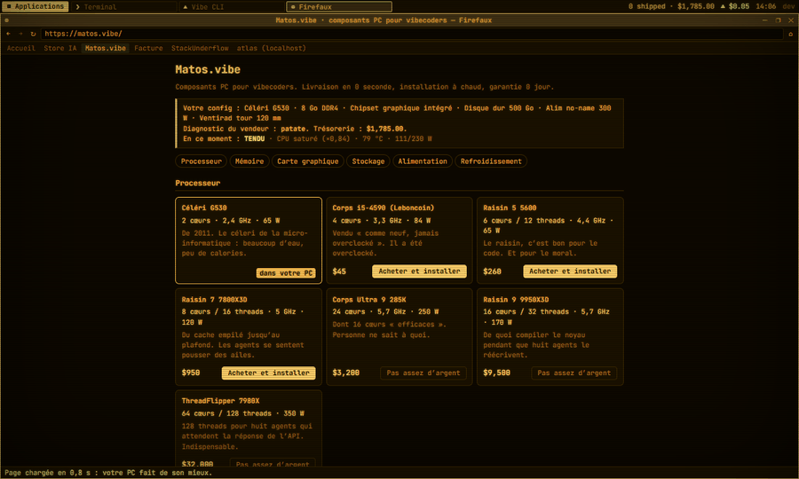

Premiers pas
- InstallerVibe CLI : curl … | bash
- Lancermistral, et la barre se remplit
- Shipperle projet part en prod : $
- AcheterB : agents, skills, matériel
- GrandirCodex, Claude Code, la machine de rêve
- Nouvelle partie. Le PC démarre sur le BIOS (Suppr pendant le POST : le setup, pour overclocker), puis sur un terminal zsh. La machine est neuve : rien n’est installé, pas même votre agent.
- Installez Vibe CLI (Mistral, gratuit) : . Autre façon : .
pip install mistral-viberépond externally-managed-environment, comme sur une vraie Debian. - Tapez . Votre premier agent écrit du code, la barre de ship se remplit toute seule. Chaque projet en production rapporte de l’argent, moins la facture des tokens.
- Ouvrez le store avec
B(oustore) : des agents, un orchestrateur, des skills, un terminal plus rapide. - Installez de quoi surveiller le PC : . Le PC de départ est une patate : trop d’agents et il rame, chauffe, puis part en kernel panic.
- Le bureau et le navigateur : , puis . Firefaux ouvre matos.vibe (le matériel) et lolama.vibe (l’IA locale).
- Changez de plateforme : la licence Codex ou Claude Code s’achète au store (onglet Plateformes), le CLI s’installe dans le terminal (, ).
- Fermez l’onglet. Vos agents shippent pendant votre absence, 4 h au maximum.


Une ancienne partie garde tout ce qu’elle avait : la machine neuve ne concerne que les nouvelles parties. Pour tout avoir installé d’un coup : ?setup=0 à la fin de l’adresse. Pour tout essayer sans toucher à votre partie : le bac à sable, dans le menu titre.
Touches
| Touche | Effet |
|---|---|
A | choisir les agents : un écran du terminal (façon nmtui), ou une fenêtre sous Xfce |
L | changer la disposition : grille, colonnes, lignes, focus |
O | déplacer l’orchestrateur : haut, gauche, droite, aucun |
T ou ` | ouvrir ou fermer le terminal |
S | shipper (tape npm run ship pour vous) |
B | le store |
U | mode boost de la plateforme au premier plan (une fois par jour) |
M | les paramètres : un écran du terminal (façon nmtui), une fenêtre sous Xfce, une boîte sur l’écran titre |
F | plein écran (ou le bouton ⤢, en bas du terminal et dans la barre de Xfce) |
H ou ? | rappel des touches |
Espace | pause (les agents aussi) |
+ − ou ↑ ↓ | vitesse du jeu, de ×0,25 à ×8 |
0–9 | aller à un onglet (barre du bas) |
Ctrl+B puis 0–9, n, p, l | onglets à la tmux : numéro, suivant, précédent, le dernier |
Échap | replier le terminal |
Dans le terminal
| Touche | Effet |
|---|---|
Entrée | lancer la commande |
Tab | compléter une commande ou un nom de fichier |
↑ ↓ | l’historique des commandes |
Ctrl+C | interrompre (apt, npm, une installation…) |
Échap | replier le terminal |
Dans htop, atop et Xfce
| Touche | Effet |
|---|---|
htop : q, F10 ou Échap | quitter |
htop : ↑ ↓ | choisir un processus |
htop : P / M | trier par CPU / par mémoire |
htop : k ou F9 | tuer le processus choisi (il revient, souvent) |
atop : q ou Échap | quitter |
Xfce : Alt+F1 | le menu Applications : on y tape pour chercher (applis et commandes), Entrée lance le premier résultat |
Fichiers : Ctrl+C Ctrl+X Ctrl+V | copier, couper, coller |
Fichiers : F2 · Suppr | renommer · supprimer |
| Fichiers : clic sur un en-tête | trier par nom, taille, type ou date (un second clic inverse ; les dossiers restent en tête ; gardé) |
Fichiers : Ctrl+Maj+N · Alt+Entrée | créer un dossier · propriétés |
| Xfce : double-clic | ouvrir une icône du bureau (les flèches s’y déplacent aussi) |
Xfce : Alt+² (Alt+` en QWERTY) | changer de fenêtre : le sélecteur s’ouvre sur la fenêtre d’avant, chaque appui avance, Maj recule, relâcher Alt y va (Alt+Tab appartient à votre système) |
Xfce : Ctrl+Alt+← Ctrl+Alt+→ | coller la fenêtre sur la moitié gauche ou droite de l’écran (ou la glisser contre un bord) |
Xfce : Ctrl+Alt+↑ · Ctrl+Alt+↓ | agrandir (ou glisser contre le haut) · restaurer, puis réduire |
| Glisser-déposer | une ligne de Thunar ou une icône du bureau sur un dossier (de Thunar, de la colonne, du chemin, du bureau), le Dossier personnel, le bureau, ou la Corbeille (supprimer) ; Ctrl en lâchant : copier |
| Xfce : plusieurs icônes | Ctrl+clic, un rectangle à la souris sur le fond, Ctrl+A ; le groupe se glisse d’un bloc, se supprime (Suppr) ou s’ouvre (clic droit) ensemble ; Échap : plus rien |
| Xfce : les raccourcis | les icônes des applis sont des lanceurs .desktop dans ~/Bureau (posés à l’installation, retirés à la désinstallation) ; clic droit sur le bureau › Créer un raccourci : un programme ou une commande |
| Xfce : les fichiers du bureau | ce que contient ~/Bureau apparaît sur le bureau ; double-clic pour ouvrir ; clic droit sur le fond : créer un dossier, un document ; Suppr · F2 : supprimer, renommer |
| Xfce : glisser une icône du bureau | la poser sur une case de la grille (sur une autre icône : elles échangent) ; Maj+flèches au clavier ; les places sont gardées ; « Aligner les icônes » (clic droit) remet les colonnes |
| Xfce : clic droit sur le bureau | un terminal, les fichiers, les applications, le fond d’écran suivant, les Paramètres du bureau, la déconnexion |
| Xfce : clic droit sur une barre de titre (ou dans la barre des tâches) | réduire, agrandir, les moitiés de l’écran, toujours au premier plan, fermer ; la place et la taille de chaque fenêtre sont gardées dans la partie |
| Xfce : la zone de notifications | en haut à droite : courriels, incident, PR, panne du monde, clé exposée ; un clic ouvre la bonne appli ; ◔ : le journal des notifications |
Xfce : Ctrl+Alt+D · Ctrl+Alt+W | afficher le bureau (une seconde fois : tout revient) · fermer la fenêtre |
Dans le setup du BIOS
| Touche | Effet |
|---|---|
Suppr ou F2, pendant le POST | entrer dans le setup (au doigt : toucher « DEL » à l’écran) |
← → | changer d’onglet |
↑ ↓ | choisir une ligne |
Entrée | la liste des valeurs |
+ − | monter ou descendre d’un cran |
F1 · F9 | l’aide · tout sur Auto |
F10 | enregistrer et redémarrer |
Échap | quitter sans enregistrer |
Dans GRUB et memtest86+
| Touche | Effet |
|---|---|
GRUB : ↑ ↓ · Début Fin | choisir une entrée (le compte à rebours s’arrête) |
GRUB : Entrée | démarrer l’entrée choisie (ou ouvrir les options avancées) |
GRUB : Échap | revenir au menu principal ; avant d’avoir choisi : passer le démarrage |
GRUB : e · c | modifier, ligne de commande (refusés par un agent) |
memtest86+ : Échap | arrêter et redémarrer |
Installer des choses
Une nouvelle partie démarre sur une machine neuve. Les CLI d’agents et les programmes du bureau s’installent à la main, et le restent d’une partie à l’autre (une nouvelle partie repart de zéro).
Les paquets du système : htop, atop, lm-sensors, smartmontools, xfce4, firefaux… Sans sudo : verrou refusé.
Les scripts d’installation : Vibe CLI, Claude Code, Lolama. Sans le pipe, curl affiche le script.
Les paquets npm globaux : Codex, Claude Code. Sans sudo : EACCES. Sans le scope : 404.
mistral-vibe, en Python. pip refuse (externally-managed-environment), comme sur Debian.

Les CLI d’agents
| Plateforme | Commande | Autre façon | Licence |
|---|---|---|---|
Vibe CLI (commande mistral) | gratuite | ||
Codex (commande codex) | — | $1 500 au store | |
Claude Code (commande claude) | $12 000 au store | ||
Moon AI (commande moon) | — | $60 000 au store | |
| Lolama (IA locale) | , ou le bouton de lolama.vibe, dans Firefaux (ollama marche aussi) | gratuite | |
| StudioLM (IA locale) | le bouton de githype.vibe/studiolm, dans Firefaux | — | gratuite |
pip install mistral-vibe: error: externally-managed-environment. Vibian protège son Python.--break-system-packagespasse en force.npm install -gsanssudo: EACCES, permission refusée. Sans-g, le paquet atterrit dans node_modules et la commande n’est pas dans le PATH.- Le mauvais nom (
npm install -g codex,claude-code) : 404. Les vrais paquets sont@openai/codexet@anthropic-ai/claude-code. curlsans| bashaffiche le début du script. Une autre adresse : Could not resolve host.- On peut installer un CLI avant d’acheter sa licence : il attend qu’on le paie. Une licence achetée sans CLI installé ne bascule rien : l’onglet Plateformes affiche « CLI à installer ».
aptne connaît pas les CLI d’agents :sudo apt install claudedonne la bonne commande à la place.
Les paquets apt
sudo apt install <paquet>, sudo apt remove <paquet>. Sans sudo : verrou refusé. Raccourcis compris : xfce → xfce4, sensors → lm-sensors, firefox → firefaux. Supprimer un paquet essentiel fait tomber le système.
| Installer | Version | Rôle | Au départ |
|---|---|---|---|
| 2.10.0-2 | moniteur système détaillé | à installer | |
| 1.26.2-1 | visionneuse de documents PDF (il lui faut le bureau) | à installer | |
bash | 5.2.32-1 | le shell de secours (essentiel) | essentiel |
| 0.24.0-2 | cat, avec des couleurs et des ailes | en option | |
| 1:128.5.0esr-1 | client de courriel : les clients, les investisseurs, l’URSSAF, et le hameçonnage (sans bureau : façon mutt) | en option | |
| 1.4.1+dfsg-1 | l’antivirus libre : sudo freshclam, puis clamscan -r ~ | en option | |
coreutils | 9.4-3.1 | ls, cp, rm… le strict minimum (essentiel) | essentiel |
| 3.03+dfsg2-8 | une vache qui parle | en option | |
| 8.10.1-2 | télécharger des choses depuis le terminal | installé | |
| 26.1.5+dfsg1-4 | des conteneurs, dans des conteneurs | installé | |
| 1:29.4+1-4 | un système d’exploitation, avec un éditeur de texte | en option | |
| 2.27.1-1 | la config de la machine, en plus rapide | en option | |
| 142.0-vibe1 | le navigateur web (40 onglets déjà ouverts) | à installer | |
| 1:1.99.1-7.3 | une citation au hasard, souvent vraie | en option | |
| 1:2.45.2-1 | gestion de versions (et de conflits) | installé | |
| 2:1.23~1 | le langage Go | installé | |
| 3.4.1-1 | moniteur de processus interactif | à installer | |
| 1.7.1-3 | du JSON en ligne de commande | en option | |
libc6 | 2.40-3 | la bibliothèque C (essentielle, ne pas y toucher) | essentiel |
linux-image-6.11.0-friday | 6.11.0-1 | le noyau, version vendredi (essentiel) | essentiel |
| 1:3.6.0-10 | températures, ventilateurs et tensions du PC | à installer | |
| 0.13.1-1 | des LLM en local : aucune API, toute la VRAM (lolama pull 4b, puis lolama run 4b) | en option | |
| 0.6.3-1 | éditeur de texte de Xfce (il lui faut le bureau) | à installer | |
| 8.2-1 | éditeur de texte pour les humains | installé | |
| 7.1.0-4 | affiche la config de la machine | en option | |
| 20.18.1+dfsg-1 | JavaScript côté serveur | installé | |
| 9.2.0~ds1-3 | gestionnaire de paquets JavaScript | installé | |
| 3.12.7-1 | le langage Python | installé | |
| 14.1.1-1 | grep, mais rapide | en option | |
| 1.82.0+dfsg1-2 | le compilateur Rust (pour tout réécrire en Rust) | en option | |
| 5.02-1 | corrige les fautes de frappe sur ls, à sa façon | en option | |
| 7.4-2 | la santé des disques (SMART) : sudo smartctl -a /dev/sda | à installer | |
| 1:1.0.0.81-2 | 412 jeux achetés, 3 lancés | à installer | |
| 1.9.16p2-1 | faire semblant d’être root | installé | |
systemd | 256.7-3 | le gestionnaire du système, et de tout le reste (essentiel) | essentiel |
| 4.20.1-1 | gestionnaire de fichiers de Xfce (il lui faut le bureau : xfce) | à installer | |
| 3.5a-1 | un terminal dans le terminal | en option | |
| 2.1.3-1 | l’arborescence des dossiers | installé | |
| 2:9.1.0861-1 | éditeur de texte (pour en sortir : voir Stack Overflow) | installé | |
| 3.0.21-0+deb13u1 | lecteur multimédia : lit tout, même ce que les agents ont encodé (il lui faut le bureau) | en option | |
| 4.20 | le bureau Xfce : fenêtres, menu, tableau de bord (commande xfce) | à installer | |
zsh | 5.9-6 | le shell de ce terminal (essentiel ici) | essentiel |
Commandes du terminal
help les liste dans le jeu, selon ce qui tourne. Les noms de fichiers gardent leur casse, le reste non.
Agents et plateformes
| Commande | Ce que ça fait |
|---|---|
| lancer Vibe CLI et ses agents Mistral | |
| lancer Moon AI et ses agents : la plateforme la plus chère, la seule qui marche à peu près (elle le dit) | |
| Moon Blur : masque les données sensibles détectées (noms, e-mails, IBAN, clés d’API, téléphones) par des étiquettes [MB-NOM01]… La détection n’est pas exhaustive | |
| le mode programmatique de Vibe CLI : le code s’écrit tout de suite, dans le terminal, facturé à Codestral. Une commande inconnue, elle, reste inconnue | |
| lancer Codex (licence au store) | |
| lancer Claude Code (licence au store) | |
| lancer l’équipe locale (IA locale installée) | |
| option : le modèle des agents (claude --model sonnet) | |
| option : le nombre d’agents, jusqu’à ceux achetés | |
| options : l’aide du CLI, sa version | |
| l’état de vos plateformes : premier plan, arrière-plan, à l’arrêt | |
| passer une plateforme au premier plan, l’équipe change d’IA sans s’arrêter | |
| lancer une plateforme en arrière-plan (si le PC suit), l’arrêter | |
| le mode boost de Claude Code, Codex ou Vibe CLI, une fois acheté | |
| ouvrir le store |
Pendant que les agents travaillent
| Commande | Ce que ça fait |
|---|---|
| shipper le projet (en mode idle, la barre shippe toute seule) | |
| ouvrir le sélecteur d’agents | |
| disposition des volets : grille, colonnes, lignes, focus | |
| position de l’orchestrateur : haut, gauche, droite, aucun | |
| changer le modèle des agents (s’il est acheté) | |
| la facture détaillée, aux tarifs de chaque modèle | |
| agents, modèle, orchestrateur, dépense | |
| pause café (Espace pour reprendre) | |
| relancer la session (après un game over : la seule commande qui marche encore) |
Les ordres à l’orchestrateur se tapent tels quels, il les transmet à tous les agents :
travail travail fait moi du cashfaitj'ai rien compris faitfait un SaaS fait pas d'erreur
IA locale
| Commande | Ce que ça fait |
|---|---|
| les modèles : taille, VRAM, efficacité, téléchargés ou non | |
| télécharger un modèle : 2b, 4b, 8b, 27b, 35b, 72b | |
| lancer l’équipe locale avec ce modèle (--agents | |
| la VRAM prise par le modèle qui tourne | |
| compris aussi : Lolama et StudioLM |
Système et matériel
| Commande | Ce que ça fait |
|---|---|
| le moniteur : processus, cœurs, mémoire, swap, température, et l’état du PC (OK, TENDU, À TERRE) | |
| le moniteur détaillé : disques, réseau, carte graphique | |
| températures, ventilateurs, alimentation (paquet lm-sensors) | |
| la mémoire et le swap | |
| redémarrer le PC, BIOS compris : Suppr (ou F2) pendant le POST ouvre le setup, pour overclocker. Les agents repartent après. Aussi dans le menu Applications de Xfce. | |
| l’état SMART du disque (paquet smartmontools, avec sudo) : heures de fonctionnement, secteurs réalloués, usure, température | |
| la santé (PASSED ou FAILED!), les attributs, l’identité du disque | |
| lancer un autotest (2 min, jusqu’à 85 sur le disque dur), lire son résultat, l’interrompre | |
| arrêter un programme (tskill htop) ou les agents (tskill codex) ; tskill /? pour l’aide | |
| l’antivirus libre ClamAV, et la mise à jour de sa base de signatures (sans elle, il ne connaît pas VibeCoin) | |
| analyser (-r : les sous-dossiers ; -i : seulement les fichiers infectés ; --remove : les supprimer) | |
| lire les tâches planifiées, les supprimer (un mineur s’y cache parfois) | |
| la config de la machine (à installer) | |
| Vibank dans le terminal : le relevé de compte, le même en JSON, ou la page enregistrée (index.html) | |
| le courrier : la liste, lire un courriel, y répondre (accepter, refuser, geste, ignorer, declarer, ouvrir, signaler) | |
| le client de courriel (sudo apt install blunderbird) : une fenêtre sous Xfce, façon mutt sans bureau (↑↓, Entrée, a, r, s, o, q) | |
| l’astreinte : la panne de prod en cours (symptôme, remboursements, pistes), la confier à un agent (qui peut l’empirer), l’historique | |
| le diagnostic : services api, postgresql, pgbouncer, nginx ; ce qu’ils montrent dépend de la panne | |
| les réparations : chacune pour sa panne (les autres ne servent à rien, et la plupart demandent sudo) | |
| la clé d’API des agents : son état, la révoquer et en créer une autre | |
| le dernier commit (pendant une fuite : le .env, la clé en clair) ; que git oublie le .env | |
| vos humains : qui est là, qui est en congés, la fatigue des vendredis, les salaires | |
| les pannes du monde : celle en cours (API, canicule, prix des tokens, nouveau modèle, électricité) et les dernières | |
| les pull requests des agents : la liste, relire le diff, fusionner, fermer, tout fusionner sans lire (aussi : gh pr …) | |
| les défis : celui de la startup en cours et ceux réussis, renoncer, en choisir un pour la suivante (local, nodesk, friday, solo, budget) | |
| la valorisation de la startup ; au-delà de 25 M$, l’introduction en bourse (une nouvelle startup, des stock-options pour toujours) | |
| un terminal de plus (une fenêtre tmux, ou une fenêtre Terminal sous Xfce) : son dossier, son historique. exit ou Ctrl+B puis & le ferme ; tmux list-windows, next-window, kill-window (paquet tmux) | |
| la Logithèque (il faut le bureau) : les paquets d’apt par catégorie, une recherche, Installer, Supprimer, Lancer ; elle tape apt-get pour vous, dans le terminal | |
| Session et démarrage : « Lancer le bureau Xfce au démarrage » | |
| les Paramètres du bureau (il faut le bureau) : le fond d’écran, les icônes, la session et le démarrage | |
| sous Xfce : une nouvelle fenêtre Terminal (aussi dans le menu Applications, « Nouveau terminal ») | |
| la version terminal de Thunar, façon Midnight Commander : deux panneaux, Tab, Entrée, F3 voir, F4 éditer, F5 copier, F6 déplacer, F7 dossier, F8 supprimer, F10 quitter (avec thunar) | |
| la version terminal de Firefaux : le Web en texte, les liens numérotés au clavier, g pour une adresse, ← pour revenir. Pas de JavaScript, donc pas de pub (avec firefaux) | |
| la version terminal de VLC : la musique téléchargée, Espace, Entrée, ← →, + et - (avec vlc) | |
| la version terminal de Steam : login, apps_installed, app_status 4127, app_update, achievements, quit (avec steam) | |
| À propos : la config du PC du jeu, l’éditeur, les contributeurs, les agents, la licence (il faut le bureau ; aussi dans le menu Applications) ; xfce4-about contrib ouvre l’onglet des contributeurs | |
| réglages : couleurs du terminal, taille, graphismes, nom d’utilisateur, export de la partie (un écran du terminal, ou une fenêtre sous Xfce) | |
| la liste des commandes | |
| ouvrir ce wiki dans un nouvel onglet | |
| les classiques | |
| effacer le terminal | |
| auteur, licence, mentions | |
| refusé : il reste toujours une version à shipper |
Paquets et installations
| Commande | Ce que ça fait |
|---|---|
| installer ou enlever des paquets (avec sudo) | |
| mettre à jour, ranger | |
| lister (✓ : installé ; --installed, --upgradable), chercher, décrire | |
| pareil | |
| le projet JavaScript (npm help pour le reste) | |
| compris aussi | |
curl … | bash | installer Vibe CLI, Claude Code ou Lolama par leur script |
| installer mistral-vibe (pip refuse sans --break-system-packages) | |
| faire semblant d’être root (le mot de passe est deviné par un agent) |
Fichiers
| Commande | Ce que ça fait |
|---|---|
| lister un dossier (ls -la pour les détails) | |
| se déplacer | |
| où suis-je, l’arborescence | |
| lire un fichier | |
| créer un dossier, un fichier | |
| éditer un fichier dans le terminal : ^O écrire, ^X quitter, ^F chercher, ^K couper, ^U coller, ^G l’aide (les raccourcis se cliquent aussi). Les fichiers de root demandent sudo | |
| supprimer… mais pas n’importe quoi : rm -rf / a des conséquences | |
| chercher dans un fichier, ou dans la sortie d’une commande (les correspondances en rouge) ; grep qui ne trouve rien compte comme un échec, pour && et || | |
| le début, la fin (-n 5, -2), tout d’un coup (less) ; tail -f : rien ne bouge depuis vendredi | |
| compter (-l, -w, -c), trier (-r, -n, -u, -k 2), dédoublonner (-c compte les doublons) | |
| chercher des fichiers (-name "*.md", -type f ou d, -maxdepth N) · écrire l’entrée standard dans un fichier et l’afficher (sudo tee pour ceux de root) | |
| rediriger : écrire, ajouter à la fin, lire, faire taire les erreurs, les mêler à la sortie. Chez root, permission non accordée : la redirection appartient au shell, pas à sudo (… | sudo tee) | |
| enchaîner : toujours, si ça a marché, si ça a raté. Les erreurs restent à l’écran, comme stderr ; un programme qui veut l’écran (htop, nano) ne passe pas dans un tube |
Bureau et programmes
| Commande | Ce que ça fait |
|---|---|
| le bureau Xfce (paquet xfce4) ; xfce --quit pour revenir au terminal | |
| le gestionnaire de fichiers (dans Xfce) | |
| l’éditeur de texte (dans Xfce) | |
| la visionneuse PDF (dans Xfce) | |
| le navigateur (dans Xfce) : tous les noms mènent à Firefaux | |
| le lecteur multimédia (paquet vlc, dans Xfce) : la musique téléchargée sur telecharge.vibe |
Bonus
| Commande | Ce que ça fait |
|---|---|
| le terminal du bunker antiatomique ; hack y force le coffre de prod, exit remonte | |
| les jouets d’apt, à installer | |
| une vache, comme dans le vrai apt | |
| refusé : la branche est protégée (par les agents) |
Une commande inconnue, une fois les agents lancés ? Le terminal écrit du code au hasard. Et vous le facture.

Plateformes et modèles
Chaque plateforme garde son équipe. Une seule tient l’onglet des agents (le premier plan), les autres travaillent en arrière-plan si le PC suit : deux plateformes demandent 4 threads et 8 Go de RAM, trois en demandent 12 et 16 Go. Une licence achetée (et son CLI installé) fait migrer l’équipe au premier plan ; l’ancienne attend dans un tmux détaché.
| Plateforme | Licence | Modèle de départ | Orchestrateur | Modèles |
|---|---|---|---|---|
| ▲ Vibe CLI | gratuite | Codestral 25.08 | Mistral Large 4 | 4 |
| ◆ Codex | $1 500 | GPT-6.1 Terra | GPT-6.2 Astra | 4 |
| ✻ Claude Code | $12 000 | Claude Opus 5.5 | Claude Fable 5.2 | 4 |
| ☾ Moon AI | $60 000 | Moon 1 | Moon 1 | 4 |
| ◉ IA locale | gratuite (Firefaux) | Jemma 3 2B | aucun | 6 |
Les modèles
Le travail est donné par rapport à Codestral, le modèle de départ. Les tarifs sont ceux de l’API, par million de tokens (entrée / sortie). Un modèle acheté est sélectionné tout de suite ; model <nom> pour revenir en arrière.
| Plateforme | Modèle | Tarif / M tokens | Travail | Accès | Note |
|---|---|---|---|---|---|
| Vibe CLI | Mistral Large 4large | $0,7 / $2,1 | ×1,25 | $300 | le plus cher (tout est relatif) |
| Vibe CLI | Codestral 25.08codestral | $0,3 / $0,9 | ×1 | inclus | le codeur |
| Vibe CLI | Mistral Small 4small | $0,15 / $0,6 | ×0,75 | inclus | |
| Vibe CLI | Ministral 3 14Bministral | $0,2 / $0,2 | ×0,63 | inclus | pressé |
| Codex | GPT-6.2 Astraastra | $8 / $40 | ×2,88 | $250 000 | le plus cher |
| Codex | GPT-6.2 Solsol | $2 / $10 | ×2,13 | $10 000 | équilibré |
| Codex | GPT-6.1 Terraterra | $1 / $5 | ×1,63 | inclus | |
| Codex | GPT-6 Lunaluna | $0,1 / $0,5 | ×1 | inclus | pressé |
| Claude Code | Claude Fable 5.2fable | $8 / $40 | ×3 | $300 000 | le plus cher |
| Claude Code | Claude Opus 5.5opus | $4 / $20 | ×2,5 | inclus | |
| Claude Code | Claude Sonnet 5.5sonnet | $2 / $10 | ×2 | inclus | équilibré |
| Claude Code | Claude Haiku 5.5haiku | $0,1 / $0,5 | ×1,38 | inclus | pressé |
| Moon AI | Moon 1moon | $12 / $60 | ×4 | inclus | le seul qui marche (à peu près) |
| Moon AI | Claude Opus 5.5 · via Moon AImopus | $4,4 / $22 | ×2,5 | inclus | relu par Moon 1 |
| Moon AI | GPT-6.2 Sol · via Moon AImsol | $2,2 / $11 | ×2,13 | inclus | corrigé par Moon 1 |
| Moon AI | Codestral 25.08 · via Moon AImcodestral | $0,33 / $0,99 | ×1 | inclus | surveillé par Moon 1 |
Les modes boost
Achetés une fois au store (onglet Agents IA), utilisables une fois par jour (jour local), pendant 1 min, quand l’équipe tourne. On les lance avec la commande, la touche U ou l’onglet Plateformes. Le chrono attend quand le jeu est en pause, que l’équipe s’arrête ou que l’onglet est masqué. Prolongations : 1:30 pour ×0,5 le prix du mode · 2:00 pour ×1,25 le prix du mode · 2:30 pour ×3 le prix du mode · 3:00 pour ×7,5 le prix du mode.
| Plateforme | Mode | Prix | Effet | Détail |
|---|---|---|---|---|
| Vibe CLI | flashFlash Answers | $400 | ×2,5 de travail · ×1,2 de tokens · ×2 de bugs · ×1,5 de crashs | 1 000 mots par seconde, dont certains justes : ×2,5 de travail, mais deux fois plus de bugs et 50 % de crashs en plus. |
| Codex | xhighraisonnement xhigh | $4 000 | ×2,2 de travail · ×2,5 de tokens · ×0,5 de bugs | Effort de raisonnement maximal : ×2,2 de travail et deux fois moins de bugs. Il réfléchit à voix haute, et la réflexion se facture : ×2,5 de tokens. |
| Claude Code | ultracodeultracode | $30 000 | ×3 de travail · ×4 de tokens · ×1 de bugs | Chaque tâche part à un essaim de sous-agents : ×3 de travail. Chacun relit tout le dépôt de son côté : ×4 de tokens. |
IA locale
Lolama (, ou lolama.vibe) ou StudioLM (githype.vibe) font tourner un modèle sur votre carte graphique. Aucune API : la facture reste à $0. En échange :
- La VRAM. Le modèle doit tenir dans la carte graphique. Sinon, le lancer fait tomber le PC : kernel panic « NVRM: GPU out of memory », avec la VRAM demandée et celle de la carte, puis redémarrage. L’équipe locale ne repart pas toute seule.
- Chaque agent ajouté double la VRAM demandée : ×2 avec deux agents, ×4 avec trois, ×8 avec quatre. Les agents sont gratuits, la VRAM non.
- Pas d’orchestrateur, ni de mode boost : la carte graphique est déjà à fond.
- L’efficacité : tous les modèles font moins bien que Codestral, sauf Kwen 2.5 72B, son équivalent.
- L’arrière-plan refuse un modèle qui ne rentre pas (« VRAM insuffisante ») : seul un lancement depuis le terminal fait planter le PC.
| Modèle | Chipset0,5 Go | GT 7102 Go | GTX 10606 Go | RX 7800 XT16 Go | RTX 409024 Go | RTX 5090 Ti32 Go | 4 GPU datacenter320 Go |
|---|---|---|---|---|---|---|---|
| Jemma 3 2B1,7 Go | ✗ | 1 | 2 | 4 | 4 | 5 | 8 |
| Jemma 3 4B3,2 Go | ✗ | ✗ | 1 | 3 | 3 | 4 | 7 |
| Lama 3.1 8B5,4 Go | ✗ | ✗ | 1 | 2 | 3 | 3 | 6 |
| Jemma 3 27B17 Go | ✗ | ✗ | ✗ | ✗ | 1 | 1 | 5 |
| Kwen 3 35B22 Go | ✗ | ✗ | ✗ | ✗ | 1 | 1 | 4 |
| Kwen 2.5 72B44 Go | ✗ | ✗ | ✗ | ✗ | ✗ | ✗ | 3 |
L’efficacité se lit par rapport à Codestral (100 %), le modèle de départ de Vibe CLI.
| Modèle | 1 agent | 2 agents | 3 agents | Efficacité | Note |
|---|---|---|---|---|---|
Jemma 3 2Bjemma3:2b | 1,7 Go | 3,4 Go | 6,8 Go | 13 % | tient sur un grille-pain |
Jemma 3 4Bjemma3:4b | 3,2 Go | 6,4 Go | 12,8 Go | 23 % | |
Lama 3.1 8Blama3.1:8b | 5,4 Go | 10,8 Go | 21,6 Go | 38 % | le classique |
Jemma 3 27Bjemma3:27b | 17 Go | 34 Go | 68 Go | 56 % | demande une vraie carte graphique |
Kwen 3 35Bkwen3:35b | 22 Go | 44 Go | 88 Go | 69 % | |
Kwen 2.5 72Bkwen2.5:72b | 44 Go | 88 Go | 176 Go | 100 % | aussi bon que Codestral, pour 44 Go de VRAM |
La VRAM des cartes graphiques
| Carte graphique | VRAM | Prix |
|---|---|---|
| Chipset graphique intégré | 0,5 Go | au départ |
| GéFarce GT 710 (occasion) | 2 Go | $35 |
| GéFarce GTX 1060 | 6 Go | $190 |
| Radian RX 7800 XT | 16 Go | $750 |
| GéFarce RTX 4090 | 24 Go | $2 600 |
| GéFarce RTX 5090 Ti Super Duper | 32 Go | $9 800 |
| Grappe de 4 GPU de datacenter | 320 Go | $42 000 |


Le store
B ou store, en mode idle. Trois onglets : Agents IA (l’équipe, l’orchestrateur, le terminal, les modèles, les modes boost, les skills), Plateformes (licences, premier plan, arrière-plan) et Matériel PC (avec un panier : sockets et DDR sont vérifiés). Les agents et les licences sont aussi sur store.agents.vibe, le matériel sur matos.vibe, dans Firefaux.
Les agents
Jusqu’à 8 par plateforme. Le prix monte à chaque agent, et dépend de la plateforme. L’IA locale : agents gratuits, mais chacun double la VRAM.
| Vibe CLI | Codex | Claude Code | |
|---|---|---|---|
| 2e agent | $20 | $32 | $40 |
| 3e agent | $50 | $80 | $100 |
| 4e agent | $125 | $200 | $250 |
| 5e agent | $313 | $500 | $625 |
| 6e agent | $781 | $1 250 | $1 563 |
| 7e agent | $1 953 | $3 125 | $3 906 |
| 8e agent | $4 883 | $7 813 | $9 766 |
L’orchestrateur
Sans orchestrateur, chaque agent ajouté coûte en coordination. Avec, il délègue tout, y compris la délégation, et consomme des tokens au tarif de son modèle.
Dès 3 agents. Coordonne l’équipe : fini les pertes de coordination, +8 % de travail par agent, −25 % de bugs.
Dès 5 agents. Il planifie avant de déléguer : +20 % de travail, +9 % par agent, −40 % de bugs. La planification se facture : +30 % de tokens d’orchestrateur.
Avec 2 plateformes. Coordonne aussi les équipes en arrière-plan : elles gagnent les bonus d’orchestration. +30 % de travail, +10 % par agent, −50 % de bugs, et une facture d’orchestrateur à l’avenant.
Le terminal
Tout va plus vite, la facture par seconde aussi.
| Terminal | Vitesse | Prix |
|---|---|---|
| terminal IA lent | ×0,5 | au départ |
| SSD d’occasion | ×0,75 | $15 |
| fibre optique | ×1 | $60 |
| NVMe | ×1,5 | $240 |
| overclocké | ×2 | $900 |
| refroidi à l’azote | ×3 | $4 000 |
| quantique (bêta) | ×5 | $25 000 |
| vendredi 17 h | ×8 | $300 000 |
Les skills
| Skill | Prix | Effet |
|---|---|---|
| tests unitaires | $60 | −30 % de bugs et −20 % d’incidents de prod. Les agents écrivent enfin des tests (qui passent, au moins). |
| gestion des erreurs | $90 | −35 % de crashs : des try / catch, avec de vrais messages dedans. |
| watchdog | $200 | Un agent planté redémarre deux fois plus vite. |
| prompt caching | $450 | −40 % de tokens d’entrée facturés : le dépôt est relu depuis le cache. Il est toujours relu, hein. |
| revue de code | $700 | −35 % de bugs. Un agent relit les diffs des autres (en diagonale). |
| hooks pre-commit | $1 200 | Un lint avant chaque commit : −40 % de déploiements ratés, −10 % de bugs. Les agents ont découvert --no-verify, mais pas tous. |
| worktrees parallèles | $1 800 | Chaque agent dans son worktree : deux fois moins de pertes de coordination sans orchestrateur. |
| compaction du contexte | $3 000 | −40 % de crashs et −20 % de tokens consommés. |
| runbooks (écrits par un agent) | $5 000 | Chaque incident de prod a sa procédure : incident vous donne la commande qui répare. Écrite par un agent : une fois sur trois, c’est celle d’un autre incident. |
| serveurs MCP | $8 000 | +12 % de travail : les agents branchent tout sur tout. Un peu plus de tokens d’entrée. |
| monitoring en prod | $15 000 | Les bugs sont repérés plus tôt : chaque bug coûte 40 % de progression en moins. Pendant un incident de prod : la cause tout de suite, et 40 % de remboursements en moins. |
| intégration continue | $30 000 | −40 % de bugs, quatre fois moins de déploiements ratés, deux fois moins d’incidents de prod. |
| feature flags | $60 000 | Un déploiement raté repart de 80 % au lieu de 50 % : on coupe le flag et on fait comme si de rien n’était. |
| sous-agents | $300 000 | +20 % de travail : chaque agent délègue à des sous-agents, qui délèguent aussi. La facture adore. |
| lire CLAUDE.md (pour de vrai) | $1 000 000 | −25 % de bugs et de crashs. Personne n’y croyait. |
Les contrats d’électricité
Onglet Matériel PC, rubrique Vibe Énergie : chaque contrat remplace le précédent, et le prix du kWh baisse aussitôt.
| Contrat | Prix | Le kWh | Commentaire |
|---|---|---|---|
| Tarif de base Vibe Énergie | au départ | $0,25 | Le contrat d’origine, signé par l’agent sans lire. |
| Option Heures creuses | $120 | $0,1875 | Les agents travaillent la nuit. Ils travaillent aussi le jour, mais le contrat ne le sait pas. −25 % sur le kWh. |
| Panneaux solaires sur le balcon | $2 500 | $0,125 | Ils produisent surtout l’été, quand il fait beau, et l’agent a branché l’onduleur à l’envers. −50 % quand même. |
| Contrat datacenter (tarif pro) | $40 000 | $0,075 | Le fournisseur vous prend pour un hyperscaler. Ne le détrompez pas. −70 %. |
| Petit réacteur modulaire | $900 000 | $0,0125 | Livré avec un agent qui affirme avoir lu la doc de sûreté. −95 %. Le voisinage n’a pas été consulté. |


Matériel et pannes
Vous démarrez sur un PC patate. Chaque agent demande du processeur, de la mémoire, de l’alimentation, et chauffe. Le matériel s’achète au store (onglet Matériel PC) ou sur matos.vibe dans Firefaux, avec un panier : le processeur doit aller sur le socket de la carte mère, la RAM doit être de la bonne génération (DDR3, DDR4, DDR5), et l’alimentation doit suivre.
- ProcesseurCéléri G530ThreadFlipper 7980X$32 000
- Carte mèreH61 OEMThreadFlipper TRX50$1 500
- Mémoire4 Go DDR3128 Go DDR5 ECC$5 200
- Carte graphiqueChipset graphique intégréGrappe de 4 GPU de datacenter$42 000
- StockageDisque dur 500 GoRAID 0 de 4 NVMe$2 700
- AlimentationAlim no-name 300 WAlim 2 000 W$2 400
- RefroidissementVentirad d’origineAzote liquide$5 500
Ce qui fait tomber le PC
Plus de chaleur que le refroidissement n’en évacue : le processeur ralentit (throttling), puis à 100 °C, Fatal exception: CPU0.
Plus de watts demandés que l’alim n’en fournit : Fatal Machine Check.
La RAM, puis les 2 Go de swap : le PC rame, puis, bien au-delà, System is deadlocked on memory.
Un modèle local trop gros pour la carte graphique : NVRM: GPU out of memory.
Celle du départ : chargée à plus de 80 %, elle peut siffler à 15 kHz, puis plus rien.
Quatre fois plus vite, quatre fois plus de risques : un disque lâche, le projet en cours est perdu.



Le BIOS et l’overclocking
Au démarrage, le POST affiche « Press DEL or F2 to run Setup ». Appuyez sur Suppr (ou F2, ou touchez « DEL » à l’écran) avant la fin du POST : vous entrez dans le setup, façon AMIBIOS, gris et bleu. Trop tard, c’est GRUB, et une touche ne fait que passer le démarrage. Plus le disque est rapide, plus le POST est court : sur le RAID 0, il faut être vif. redémarre le PC quand vous voulez (les agents repartent après), et dans Boot, Quick Boot sur Disabled rallonge le POST.
- rebootou une nouvelle partie, ou Continuer
- DEL pendant le POSTavant que GRUB n’arrive
- Vibe TweakerCPU Ratio, DRAM Frequency
- F10enregistrer et redémarrer
- memtest86+dans GRUB : la RAM tient-elle ?
Le multiplicateur du processeur, par crans de 100 MHz, de −40 % à +45 %. Plus haut : les agents travaillent plus vite, mais le processeur chauffe et consomme davantage (assez pour une surchauffe avec le ventirad d’origine). Plus bas : il chauffe moins.
La fréquence de la RAM, par crans standards (DDR3-1333, DDR4-3600…). Un peu plus rapide si ça tient. Trop haut : des bits basculent.
Chaque pièce a sa marge, tirée à l’installation : de 70 à 130 % de la marge typique (tableau ci-dessous). On ne la connaît qu’en essayant. Une nouvelle pièce remet ses réglages sur Auto.
Au-delà de la marge : des glitchs à l’écran (bandes, caractères parasites, l’écran qui saute), des erreurs matérielles chez les agents (Machine Check, segfault, bit qui bascule dans package-lock.json), et des agents qui plantent. Plus on dépasse, plus c’est fréquent. Hors ligne aussi, ça coûte.
Baisser la fréquence : reboot, DEL, Vibe Tweaker, un cran plus bas, F10. F9 remet tout sur Auto. Pour la RAM, memtest86+ (dans GRUB) dit si la fréquence tient. La RAM ECC corrige les petites erreurs de mémoire.
Main (le résumé), Advanced (températures, tensions), Boot (Quick Boot), Security (le mot de passe est de l’agent), Exit. Rien d’autre ne se règle : les agents s’en sont occupés.
| Processeur | Fréquence | Multiplicateur | Marge typique | Réglable de… à |
|---|---|---|---|---|
| Céléri G530 | 2,4 GHz | ×24 (Auto) | +15 % | ×14 à ×35 |
| Corps i5-3570 (Leboncoin) | 3,4 GHz | ×34 (Auto) | +6 % | ×20 à ×49 |
| Raisin 5 5600 | 4,4 GHz | ×44 (Auto) | +10 % | ×26 à ×64 |
| Raisin 7 7800X3D | 5,05 GHz | ×50,5 (Auto) | +4 % | ×30 à ×73 |
| Corps Ultra 9 285K | 5,7 GHz | ×57 (Auto) | +7 % | ×34 à ×83 |
| Raisin 9 9950X3D | 5,7 GHz | ×57 (Auto) | +6 % | ×34 à ×83 |
| ThreadFlipper 7980X | 5,1 GHz | ×51 (Auto) | +12 % | ×31 à ×74 |
| Mémoire | Fréquence | Marge typique | Crans proposés |
|---|---|---|---|
| 4 Go DDR3 | 1 066 MHz | +4 % | 800, 1 066, 1 333, 1 600, 1 866, 2 133, 2 400 |
| 8 Go DDR3 | 1 600 MHz | +12 % | 800, 1 066, 1 333, 1 600, 1 866, 2 133, 2 400 |
| 16 Go DDR4 | 3 200 MHz | +12 % | 2 133, 2 400, 2 666, 2 933, 3 200, 3 466, 3 600, 3 733, 3 866, 4 000, 4 266 |
| 32 Go DDR4 | 3 600 MHz | +8 % | 2 133, 2 400, 2 666, 2 933, 3 200, 3 466, 3 600, 3 733, 3 866, 4 000, 4 266 |
| 32 Go DDR5 | 6 000 MHz | +7 % | 4 000, 4 400, 4 800, 5 200, 5 600, 6 000, 6 200, 6 400, 6 600, 6 800, 7 200, 7 600, 8 000 |
| 64 Go DDR5 RGB | 6 400 MHz | +6 % | 4 000, 4 400, 4 800, 5 200, 5 600, 6 000, 6 200, 6 400, 6 600, 6 800, 7 200, 7 600, 8 000 |
| 128 Go DDR5 ECC | 4 800 MHz · ECC | +14 % | 4 000, 4 400, 4 800, 5 200, 5 600, 6 000, 6 200, 6 400, 6 600, 6 800, 7 200, 7 600, 8 000 |




GRUB et memtest86+
Après le POST, GRUB laisse 3 secondes pour choisir. ↑ ↓ (ou un clic) choisit une entrée et arrête le compte à rebours, Entrée (ou un second clic) la démarre. Une autre touche avant de choisir passe le démarrage, comme d’habitude.
| Entrée | Ce qu’elle fait |
|---|---|
| Vibian GNU/Linux 13 « friday » | le démarrage normal |
| Options avancées | un sous-menu (Échap pour revenir) : le noyau 6.11.0-friday, son mode de dépannage (le mot de passe root a été changé par un agent), et le noyau 6.10.0-thursday, « la version qui marchait » |
| Mode sans agents | Vibian démarre avec agents=off : claude, codex, mistral et l’IA locale refusent de se lancer jusqu’au prochain démarrage. Pour souffler. |
| memtest86+ | onze tests sur la RAM, à la fréquence réglée dans le BIOS, en 12 secondes. Dans la marge : PASS. Au-delà : les adresses fautives en rouge, puis FAIL. Un processeur bien trop overclocké le fait figer. Échap redémarre. GRUB compte combien de fois vous l’avez lancé. |
| Windows 11 | sur /dev/sdb1 : il se met à jour, reste à 99 %, annule tout et redémarre. Une touche l’aide à abandonner plus tôt. |




La santé des disques (SMART)
(ou /dev/nvme0, voir ) lit l’état SMART du disque installé, avec le paquet smartmontools. Le disque dur et le SSD de départ sont d’occasion : 38 412 heures pour l’un, 51 % d’usure pour l’autre. Les compteurs avancent au rythme réel, extrêmement lentement : un secteur réalloué tous les 5 jours pour le disque dur (FAILED au bout de 8 mois environ), l’usure des SSD selon ce que les agents écrivent (2 Mo/s chacun). Chaque kernel panic compte un arrêt brutal. Un disque neuf repart de zéro. Aucun effet sur la partie : c’est pour le plaisir de lire un SMART.
Après un kernel panic (ou un reboot), le PC redémarre sur le BIOS. Si la config tient, vos agents repartent ; sinon, il faut acheter mieux ou relancer moins d’agents. htop, sensors et free disent si le PC est à terre, et pourquoi.
Processeur
| Pièce | Prix | Caractéristiques | Commentaire |
|---|---|---|---|
| Céléri G530 | au départ | 2 cœurs · 2,4 GHz · 65 W · socket LGA1155 | De 2011. Le céleri de la micro-informatique : beaucoup d’eau, peu de calories. |
| Corps i5-3570 (Leboncoin) | $45 | 4 cœurs · 3,4 GHz · 77 W · socket LGA1155 | Vendu « comme neuf, jamais overclocké ». Il a été overclocké. Même socket que le Céléri : il rentre dans la carte mère d’origine. |
| Raisin 5 5600 | $260 | 6 cœurs / 12 threads · 4,4 GHz · 65 W · socket RM4 | Le raisin, c’est bon pour le code. Et pour le moral. Demande une carte mère RM4, donc de la DDR4. |
| Raisin 7 7800X3D | $950 | 8 cœurs / 16 threads · 5 GHz · 120 W · socket RM5 | Du cache empilé jusqu’au plafond. Socket RM5 : nouvelle carte mère, et DDR5 obligatoire. |
| Corps Ultra 9 285K | $3 200 | 24 cœurs · 5,7 GHz · 250 W · socket LGA1851 | Dont 16 cœurs « efficaces ». Personne ne sait à quoi. Socket LGA1851 : encore une carte mère. |
| Raisin 9 9950X3D | $9 500 | 16 cœurs / 32 threads · 5,7 GHz · 170 W · socket RM5 | De quoi compiler le noyau pendant que huit agents le réécrivent. 170 W : il lui faut des VRM costauds. |
| ThreadFlipper 7980X | $32 000 | 64 cœurs / 128 threads · 350 W · socket sTF5 | 128 threads pour huit agents qui attendent la réponse de l’API. Indispensable. Socket grand comme une tartine. |
Carte mère
| Pièce | Prix | Caractéristiques | Commentaire |
|---|---|---|---|
| H61 OEM | au départ | LGA1155 · DDR3 · VRM 95 W · 1 PCIe x16 · 0 M.2 | Récupérée dans un PC de bureau de 2011. Deux slots de RAM, dont un qui marche quand on appuie dessus. |
| Raisinboard B450 | $70 | RM4 · DDR4 · VRM 105 W · 1 PCIe x16 · 1 M.2 | La porte de sortie de 2011. Le BIOS se met à jour tout seul, parfois pendant qu’on s’en sert. |
| Raisinboard B650 | $180 | RM5 · DDR5 · VRM 130 W · 1 PCIe x16 · 2 M.2 PCIe 5 | DDR5 uniquement. Premier démarrage en 45 secondes : elle « entraîne la mémoire ». Comme les agents. |
| Corpsboard Z890 | $420 | LGA1851 · DDR5 · VRM 280 W · 2 PCIe x16 · 4 M.2 PCIe 5 | Pour le Corps Ultra. Quatorze ports USB, dont treize que personne n’utilisera. |
| Raisinboard X870E Extrême | $600 | RM5 · DDR5 · VRM 230 W · 2 PCIe x16 · 4 M.2 PCIe 5 · RGB | Des VRM qui tiennent un Raisin 9, et assez de RGB pour éclairer la cave. |
| ThreadFlipper TRX50 | $1 500 | sTF5 · DDR5 · VRM 400 W · 4 PCIe x16 · 4 M.2 PCIe 5 | Quatre slots PCIe x16 et un manuel de 300 pages, que l’agent a résumé en « ça va ». |
Mémoire
| Pièce | Prix | Caractéristiques | Commentaire |
|---|---|---|---|
| 4 Go DDR3 | au départ | 2 barrettes dépareillées · 1 066 MHz · DDR3 | Une de 2012, une de 2014. Elles ne se parlent pas, et la plus lente décide. |
| 8 Go DDR3 | $25 | 2 × 4 Go · 1 600 MHz · DDR3 | Trouvée dans un tiroir, avec un câble VGA. Rentre dans la carte mère d’origine. |
| 16 Go DDR4 | $60 | 2 × 8 Go · 3 200 MHz · DDR4 | Le minimum vital d’après les agents. Ne rentre que dans une carte mère DDR4. |
| 32 Go DDR4 | $140 | 2 × 16 Go · 3 600 MHz · DDR4 | Huit agents, un orchestrateur, et encore de la place pour le doute. |
| 32 Go DDR5 | $380 | 2 × 16 Go · 6 000 MHz · DDR5 | La même chose qu’en DDR4, en plus cher : le progrès. Obligatoire sur les cartes mères RM5 et LGA1851. |
| 64 Go DDR5 RGB | $1 600 | 2 × 32 Go · 6 400 MHz · DDR5 | La RAM qui brille va plus vite. C’est scientifique (source : l’agent). |
| 128 Go DDR5 ECC | $5 200 | 4 × 32 Go · 4 800 MHz · DDR5 · corrige ses erreurs | La seule chose du projet qui corrige ses propres erreurs. |
Carte graphique
| Pièce | Prix | Caractéristiques | Commentaire |
|---|---|---|---|
| Chipset graphique intégré | au départ | mémoire partagée · 15 W | Affiche un terminal. La plupart du temps. |
| GéFarce GT 710 (occasion) | $35 | 2 Go · 19 W | Fait tourner un relecteur local à 0,3 token par seconde. Il relit le README depuis mardi. |
| GéFarce GTX 1060 | $190 | 6 Go · 120 W | La carte de tout le monde en 2017. Relecteur local : −15 % de bugs. |
| Radian RX 7800 XT | $750 | 16 Go · 263 W | Un vrai relecteur local : −28 % de bugs, −8 % de tokens. Demande une vraie alim. |
| GéFarce RTX 4090 | $2 600 | 24 Go · 450 W | Câble d’alimentation qui fond inclus. −42 % de bugs, −14 % de tokens. |
| GéFarce RTX 5090 Ti Super Duper | $9 800 | 32 Go · 600 W | Chauffe la pièce, la maison et un peu le quartier. −55 % de bugs. |
| Grappe de 4 GPU de datacenter | $42 000 | 4 × 80 Go · 1 400 W · 4 slots PCIe x16 | Louée à l’heure, branchée sur une multiprise. Le relecteur local relit même les commentaires. |
Stockage
| Pièce | Prix | Caractéristiques | Commentaire |
|---|---|---|---|
| Disque dur 500 Go | au départ | 5 400 tr/min · SATA II | Il gratte. Il a toujours gratté. npm install prend une nuit. |
| SSD SATA 240 Go | $35 | marque inconnue · 500 Mo/s | Fabriqué par « Kingstone ». Démarrage deux fois plus rapide. |
| SSD NVMe 1 To | $130 | M.2 PCIe 4 · 7 000 Mo/s | node_modules s’installe avant que l’agent ait fini sa phrase. |
| NVMe PCIe 5 4 To | $650 | M.2 PCIe 5 · 14 000 Mo/s · radiateur intégré | Plus chaud que le processeur. Plus rapide aussi. |
| RAID 0 de 4 NVMe | $2 700 | 4 × 4 To · 4 M.2 PCIe 5 · 0 sauvegarde | Quatre fois plus vite, quatre fois plus de chances de tout perdre. Les agents adorent. |
Alimentation
| Pièce | Prix | Caractéristiques | Commentaire |
|---|---|---|---|
| Alim no-name 300 W | au départ | 300 W (sur l’étiquette) · elle siffle · rendement 65 % | Certifiée 80 Plus Rien. Au-delà de 80 % de charge, elle siffle, puis parfois plus rien. Un tiers du courant part en chaleur (et en sifflement). |
| Alim 450 W 80+ Bronze | $40 | 450 W · rendement 85 % | Une vraie alimentation, avec de vrais condensateurs. La facture d’électricité baisse d’un quart. |
| Alim 650 W 80+ Gold | $120 | 650 W · rendement 90 % | De quoi nourrir une carte graphique sérieuse. |
| Alim 850 W 80+ Platinum | $260 | 850 W · rendement 92 % | Silencieuse, efficace, et plus chère que le PC de départ. |
| Alim 1 200 W 80+ Titanium | $650 | 1 200 W · rendement 94 % | Pour la RTX 5090 et son câble qui fond. |
| Alim 2 000 W | $2 400 | 2 000 W · prise dédiée · rendement 90 % | Le compteur électrique tourne si vite qu’il produit du vent. |
Refroidissement
| Pièce | Prix | Caractéristiques | Commentaire |
|---|---|---|---|
| Ventirad d’origine | au départ | 60 W · poussiéreux | De 2011, avec la poussière d’origine. Le processeur chauffe dès qu’on le regarde. |
| Ventirad tour 120 mm | $25 | 140 W | Un vrai radiateur. Le processeur respire enfin. |
| Watercooling AIO 240 mm | $130 | 220 W | De l’eau dans le PC, volontairement cette fois. |
| AIO 360 mm RGB | $280 | 300 W | Refroidit mieux, brille plus. Les agents codent à la lumière des LED. |
| Watercooling custom | $950 | 450 W · fuite offerte | Tuyaux rigides, liquide fluo, et une fuite au-dessus de la carte graphique. |
| Azote liquide | $5 500 | 1 000 W · livraison chaque matin | −196 °C. Les agents codent avec des gants. |
Bureau, programmes et Firefaux
xfce lance le bureau (paquet xfce4) : fenêtres, menu Applications (Alt+F1), icônes à double-cliquer, tableau de bord. Les icônes suivent ce qui est installé : programmes, CLI d’agents, Lolama et StudioLM. La corbeille est toujours vide : ici, on supprime avec rm -rf.
| Programme | Menu | Rôle | Paquet |
|---|---|---|---|
| Moniteur système (htop) | processus, CPU, mémoire | ||
| Moniteur avancé (atop) | disques, réseau, carte graphique | ||
| Gestionnaire de fichiers | copier, couper, coller, renommer, propriétés · clic droit | ||
| Éditeur de texte | Mousepad · .txt, .md, config, code | ||
| Visionneuse de documents | Atril · les PDF | ||
| Navigateur web (Firefaux) | le Web, en moins bien · store IA et matos.vibe | ||
| Steam | 412 jeux, 3 lancés · les succès de celui-ci | ||
| Logithèque | |||
| Paramètres du bureau | |||
| À propos | |||
| Courrier (Blunderbird) | les clients, les investisseurs, l’URSSAF · et le hameçonnage | ||
| Lecteur multimédia VLC | la musique · les morceaux se téléchargent sur telecharge.vibe |
Le gestionnaire de fichiers
Un dossier (Ctrl+Maj+N) ou un document vide, depuis la barre d’outils ou le clic droit dans le vide.
Ctrl+C, Ctrl+X, Ctrl+V. La copie avance à la vitesse du disque (90 Mo/s pour le disque dur), et s’arrête net si le disque est plein.
F2 : le nom sans l’extension est sélectionné, un nom déjà pris est refusé. Renommer node_modules ? Il revient aussitôt.
Alt+Entrée : taille exacte (récursive pour un dossier), propriétaire, permissions, et la jauge du disque.
Déplacer ou renommer /bin, /usr ou /etc fait tomber le système, comme les supprimer.
Sept faux projets dans ~/code (une IA de 68 Go, une blockchain pour chats, la todo app n° 14…), des vidéos, une ISO, un jeu de données de 41,3 Go. Ce que vous en faites reste d’une partie à l’autre.
La musique (VLC)
Le premier morceau du jeu est de Christopher GASQ (github.com/ChrisGasq), le seul humain à avoir produit quelque chose de concret sur ce jeu. Pour l’écouter :
- Le télécharger : Firefaux, telecharge.vibe (marque-page, tuile de l’accueil, ou une recherche « musique »). Les gros boutons sont des publicités ; le vrai lien est le petit « télécharger le fichier ». Trois secondes de compte à rebours, puis musique chris 1.m4a arrive dans ~/Downloads, sur le disque sauvegardé (une deuxième fois : « musique chris 1 (1).m4a »).
- Installer VLC : . Il apparaît dans le menu Applications (Multimédia) et sur le bureau.
- L’écouter : double-cliquez la musique dans Thunar, ou une fois le bureau lancé. Espace : lecture et pause ; ← → : 5 s ; ↑ ↓ : le volume (retenu) ; L : en boucle ; I : les infos et le crédit.
- Les fichiers des agents : les MP3 de ~/Musique et les vidéos s’ouvrent aussi dans VLC, qui explique pourquoi il ne les lit pas.
- Fermer VLC, se déconnecter, redémarrer ou planter arrête la musique.



Modules et publicités
- Sans bloqueur, des pubs : un bandeau en tête de chaque page web, et des pop-ups qui s’ouvrent au chargement (trois au plus), avec une croix minuscule. Chacun prend de la RAM : htop les montre, en processus de contenu de Firefaux.
- uBlock Origin : sur addons.firefaux.vibe (ou une recherche « pub » dans Vibegle), Ajouter à Firefaux, puis accepter ses permissions. Plus de bandeau, plus de pop-up ; son badge μ, dans la barre, compte les pubs bloquées et l’active ou le désactive d’un clic.
- about:addons (le bouton ⧉) : les modules installés, à activer, désactiver ou supprimer. Dark Reader assombrit le Web (qui l’était déjà).
La messagerie
- Le courrier arrive tout seul, toutes les 2 à 5 minutes quand les agents travaillent, et sur certains événements : « Vous avez un nouveau courrier ». le liste, le lit, y répond. Blunderbird () l’affiche dans une fenêtre sous Xfce, ou façon mutt sans bureau ().
- Les clients paient d’avance une fonctionnalité absurde (« un mode sombre pour le mode sombre ») : accepter rapporte de 1,5 à 3 ships, mais la dette technique donne ×1,5 de bugs pendant 3 minutes. Après un incident, 7 fois sur 10, un client réclame un geste commercial : la moitié des remboursements, ou un avis une étoile.
- La note des clients (3,5/5 au départ) monte quand on accepte ou qu’on fait un geste, baisse quand on refuse, qu’on ignore une plainte ou que la prod tombe. Chaque point sur 100 vaut 1 % de valorisation (bourse.vibe l’affiche).
- Les fonds d’investissement (à partir de 2 M$ de valorisation) proposent 5 % de la valorisation tout de suite, contre 10 % de la société : 10 % de stock-options en moins à l’introduction en bourse.
- L’URSSAF (après l’ACRE, tous les 12 ships) attend une déclaration sous 5 minutes (
mail <n> declarer), sinon une majoration de 10 % d’un ship. - Le hameçonnage : un faux Vibank, un faux remboursement de l’URSSAF, un faux colis, une fausse facture en .pdf.exe. Regardez l’adresse : vibank-alerte.vibe.ru n’est pas vibank.vibe. Signaler le range dans les indésirables ; ouvrir la pièce jointe ou le lien installe le mineur de VibeCoin.
Les secrets qui fuient
- Un agent commite le .env (toutes les 15 à 25 minutes quand les agents travaillent, ou par une PR piégée fusionnée) : la clé d’API part dans un commit public. GitHype prévient (une alerte, un courriel) ; des robots l’ont déjà.
- Les robots consomment des tokens sur votre compte, de plus en plus vite (sur la facture du prochain ship, au plus huit ships). Le badge CLÉ EXPOSÉE dit combien. montre le commit.
- révoque la clé et en crée une autre : les robots s’arrêtent (en moins d’une minute : un succès). Mais tant que .env reste suivi par git, la nouvelle clé fuit à son tour deux minutes plus tard : .
Les humains
- Au store, catégorie Humains : un stagiaire (1 500 $, −10 % de bugs), une personne senior qui lit le code (30 000 $, −35 % de bugs, −40 % d’incidents de prod), un SRE d’astreinte (18 000 $ : il répare les incidents de prod en deux minutes).
- Un salaire à chaque ship : 4 %, 15 % et 10 % de sa valeur, plus 45 % de charges sociales (l’URSSAF). Vibank les détaille, hors ligne compris.
- Des congés : environ un par quart d’heure de jeu, 3 minutes pendant lesquelles leur effet s’arrête. dit qui est là.
- Les vendredis fatiguent : au bout de 5 ships un vendredi pour la personne senior, 6 pour le SRE, 8 pour le stagiaire, démission, par courriel. Un succès caché.
Les pannes du monde
- Toutes les 6 à 12 minutes quand les agents travaillent, pendant 1 min 30 à 5 minutes, un événement qui ne dépend pas de vous. Un badge dans le tableau de bord, la une de Vibegle, et .
- La panne d’une API : la plateforme d’une de vos équipes répond « 529 Overloaded ». Ses agents ne produisent plus rien, et leurs nouvelles tentatives se facturent (20 % des tokens). Une autre plateforme au premier plan, l’arrière-plan ou l’IA locale continuent : shipper pendant la panne de son API principale, c’est un succès. status.vibe montre les fournisseurs.
- La canicule : +12 °C pour le PC, qui chauffe, ralentit, et peut planter. La traverser sans plantage : un succès.
- La hausse du prix des tokens (×1,5), la sortie d’un nouveau modèle (les agents lisent l’annonce : −30 % de travail), un pic de consommation (le kWh ×3).
Les pull requests des agents
- Les agents ouvrent des PR, toutes les 1 à 3 minutes quand ils travaillent (cinq ouvertes au plus : au-delà, la plus vieille est fusionnée d’office). les liste ; montre le diff ; ou . Sur GitHype : votre dépôt, puis Pull requests.
- Une sur trois est piégée (une sur deux avec Mistral, une sur six avec Moon AI) : une clé d’API en clair, des tests supprimés pour passer au vert, un cache sans limite, la config renommée, la zone DNS « nettoyée ». Le piège se lit dans le diff.
- Fusionner une PR propre avance le projet de 6 %. Une PR piégée a ses conséquences : la clé volée, la dette technique (×1,5 de bugs pendant 5 minutes), ou un incident de prod. Fermer une PR piégée : bien vu ; une PR propre : du travail perdu.
- Au ship, les agents fusionnent tout ce qui reste ouvert, sans relire. fait pareil, tout de suite. Le compteur « lignes relues » ne bouge que si vous lisez.
Les incidents de prod (l’astreinte)
- Après un ship, la prod peut tomber (à partir du 3e) : 7 % de risque par ship, ×1,6 avec Mistral, ×1,4 avec l’IA locale, ×0,9 avec Claude, ×0,6 avec Moon AI ; ×2 le vendredi, ×1,5 entre minuit et 6 h. Les tests unitaires (−20 %), les hooks pre-commit (−15 %) et l’intégration continue (−50 %) le baissent. donne le risque du prochain ship.
- PagerDoudou sonne : un badge rouge dans le tableau de bord, et tant que la prod est en panne, des clients se font rembourser chaque seconde (1,2 % d’un ship par seconde, quatre ships au plus, payés à la résolution, dans Vibank) et le ship suivant attend.
- Le diagnostic : donne le symptôme et les pistes. Six pannes : l’API tuée par l’OOM killer (), des pods en CrashLoopBackOff (), le disque plein (), le certificat expiré (), le DNS (, puis ), la base saturée ().
- La réparation : la bonne commande, et elle seule (souvent avec sudo). Une autre ne sert à rien : « toujours en panne ». Moins d’une minute : un succès.
- La confier à un agent : . Il relit tous les logs (deux millions de tokens) et répare souvent : 9 fois sur 10 avec Moon AI, 3 sur 4 avec Claude, 4 sur 10 avec Mistral. Sinon, il empire les choses : les remboursements accélèrent de moitié.
- Au bout de dix minutes, quelqu’un redémarre tout au hasard, et ça marche. Hors de vue (onglet masqué), l’astreinte s’en charge. Le skill monitoring en prod donne la cause et réduit les remboursements de 40 % ; les runbooks donnent la commande, celle d’un autre incident une fois sur trois.
- status.vibe, dans Firefaux : l’état des services, l’incident en cours, l’historique et la disponibilité. : le même historique, dans le terminal.
La fin de partie : l’introduction en bourse
- La valorisation : le chiffre d’affaires cumulé × 40 (« parce que IA »), et un bonus qui monte avec les ships. Elle se lit sur bourse.vibe (avec le cours, un point par ship) ou avec .
- À partir de 25 M$, la startup peut entrer en bourse : le bouton de bourse.vibe, ou . Elle rapporte des stock-options : la racine carrée de la valorisation en millions (25 M$ : 5 ; 1 Md$ : 31).
- Une nouvelle startup commence : la trésorerie, les ships, les plateformes, les agents, le store et l’URSSAF repartent de zéro (l’ACRE aussi). Le PC, les fichiers, les paquets, les succès et le temps de jeu restent.
- Les stock-options accélèrent le travail des agents de toutes les startups suivantes : +10 % chacune, pour toujours. Trois succès : la première introduction, la licorne (caché, à plus d’un milliard), et trois introductions.
Les défis
- À l’introduction en bourse, un défi pour la startup suivante (facultatif) : les boutons de la confirmation sur bourse.vibe, ou .
- Cinq défis : 100 % IA locale (pas de licence Codex, Claude Code ni Moon AI, +50 % de stock-options), sans bureau (Xfce refuse de démarrer, +30 %), vendredi permanent (deux fois plus d’incidents, le forfait social de l’URSSAF, +50 %), un seul agent (+100 %), tokens au prix fort (×2, +40 %).
- Le bonus s’applique à l’introduction de la startup qui porte le défi (bourse.vibe l’affiche déjà). : le défi en cours et ceux réussis ; : la contrainte saute, le bonus aussi.
- Deux succès : un défi réussi, et les cinq (caché).
Plusieurs terminaux
- Un terminal de plus :
Ctrl+Bpuisc(ou , avec le paquet tmux). Il apparaît dans la barre d’onglets, comme une fenêtre tmux ;Ctrl+Bpuis le chiffre passe de l’un à l’autre. - Chacun le sien : son dossier, son affichage, son historique (flèche du haut). Une seule session d’agents pour tous.
- Sous Xfce, chaque terminal a sa fenêtre : la fenêtre active est vivante, les autres montrent l’image de leur contenu, et un clic les réveille. Le menu Applications et
xfce4-terminalen ouvrent un nouveau. - Le fermer :
exit,Ctrl+Bpuis&, ou la croix de sa fenêtre. Le premier terminal, lui, refuse toujours de partir. Une commande en cours garde la main sur son terminal : Ctrl+C d’abord.
Sans bureau : les versions terminal
- Sans Xfce, une appli graphique s’ouvre en version terminal quand il en existe une :
thunarfaçon mc,firefauxfaçon lynx,vlcfaçon nvlc,steamfaçon steamcmd,mousepaddans nano. Elles s’appellent aussi directement (mc,lynx,nvlc,steamcmd), avec le paquet de l’appli. - Atril n’a pas de version terminal : sans bureau, cannot open display, comme sous Linux.
- Les touches de fonction de mc (F3, F5, F7, F10…) ne vont pas au navigateur : F5 copie, il ne recharge pas la page.
Moon AI
- La cinquième plateforme : la licence la plus chère du store, Moon 1 d’emblée (4× le travail de Codestral, deux fois moins de bugs que Claude), et les tokens les plus chers. Il relit tout, deux fois.
- Ses modèles : Moon 1, l’agent maison, et trois modèles du jeu servis par Moon AI (Claude Opus 5.5, GPT-6.2 Sol, Codestral), un peu plus chers.
- Son caractère : l’orchestrateur et les agents dénigrent la concurrence. Codex, Claude, Mistral et l’IA locale y passent.
- Moon Blur masque les données sensibles détectées : dans les volets des agents, et à la main avec . La détection n’est pas exhaustive.
- realmoon.ai, dans Firefaux : le vrai logo, sans pub. Moon AI est un produit de Stellarr Studio, utilisé avec son accord.
L’URSSAF
- L’ACRE : les 10 premiers ships ne paient rien. La première année, on vous laisse croire que ça marche.
- Ensuite, chaque ship cotise, avec les tokens et l’électricité : cotisations sociales des agents (8 %), CRDT pour la dette technique (0,5 %), formation professionnelle des agents (0,55 %), taxe sur les tokens hallucinés (2 % de la facture), et la taxe au giga.
- La taxe au giga, votée à l’Assemblée : 0,25 % de la valeur du ship par Go de RAM installée, plafonnée à 8 %. Plus de RAM, plus de taxe. Le vendredi, un forfait social de 3 % s’ajoute.
- Où les voir : la note du ship dans le HUD, Vibank (catégorie URSSAF), et urssaf.vibe, qui calcule celles du prochain ship. Contester est possible ; la réponse arrive sous 6 à 18 mois.
Logiciels malveillants
- D’où ils viennent : les pubs trop belles (1 000 000 de tokens, Windows 11, « votre PC est infecté »), le gros bouton TÉLÉCHARGER de telecharge.vibe, et le Bloqueur de Pubs GRATUIT Pro 2026 (non vérifié, quatre utilisateurs dont trois robots), qui désactive uBlock Origin au passage. uBlock Origin, lui, cache les pubs piégées.
- Ce qu’ils font : un script atterrit dans ~/Downloads, et un mineur de VibeCoin démarre. Il se fait appeler kworker-update, se cache dans ~/.cache/.kworker et prend la moitié d’un processeur : les agents ralentissent, le PC chauffe, la facture d’électricité monte. htop le montre.
- Pourquoi il revient : tué, il est relancé une minute plus tard par cron, et au démarrage ( le montre).
- S’en débarrasser : , puis (la base livrée ne connaît pas VibeCoin), puis . clamscan supprime les fichiers, pas le processus : , ensuite, et cette fois il ne revient pas. À la main, ça marche aussi :
crontab -r,rm,kill.
Les sites de Firefaux
Toute autre adresse a été hallucinée par votre agent.
| Adresse | Ce qu’on y trouve |
|---|---|
vibe://accueil | la page d’accueil, avec ses tuiles |
vibe://recherche | Vibegle : des résultats hallucinés |
store.agents.vibe | le store des agents, en version web |
matos.vibe | le matériel : tout le catalogue, le diagnostic de votre PC, le panier |
facture.vibe | Vibank : le compte (solde, graphique, dépenses par catégorie, opérations) et ce qui reste à prélever |
githype.vibe/vous/atlas/pulls | les pull requests de vos agents : la liste, le diff, Fusionner ou Fermer, les lignes relues |
status.vibe | l’état de la prod : les services, l’incident en cours (en direct), l’historique des incidents, la disponibilité |
bourse.vibe | la valorisation de votre startup, son cours (un point par ship), et l’introduction en bourse |
realmoon.ai | Moon AI : le vrai logo, les modèles, Moon Blur, l’installation (curl … | sh) |
urssaf.vibe | l’Union pour le Recouvrement des Sommes Sur les Agents Facturés : votre espace cotisant, le barème, la taxe au giga |
stackunderflow.vibe | les questions que personne n’a lues |
githype.vibe | le faux GitHub : tendances, StudioLM à installer (github.com y mène) |
lolama.vibe | Lolama et ses modèles (ollama.com y mène) |
telecharge.vibe | la musique, faite par un humain : des publicités, un compte à rebours, et le vrai lien, en tout petit |
addons.firefaux.vibe | les modules de Firefaux : uBlock Origin, Dark Reader |
about:addons | vos modules : les activer, les désactiver, les supprimer (le bouton ⧉ de la barre) |
lmstudio.ai | mène à StudioLM, sur githype.vibe |
localhost:3000 | votre projet, en local |



Les succès (Steam)
86 succès se débloquent en jouant ; Steam les affiche. Steam est un paquet () et un programme du bureau : xfce, puis l’icône Steam ou le menu Applications › Jeux. La fiche du jeu donne le temps de jeu, les succès débloqués (avec leur date), ceux qui restent (avec leur progression) et le nombre de succès cachés.
- Chaque succès fait apparaître une notification en bas à droite ; trois ou plus d’un coup n’en font qu’une, qui les liste. Pendant le BIOS, l’écran titre ou un kernel panic, elle attend.
- Sans Steam, ils se débloquent quand même. Steam les « synchronise » à son ouverture, et la notification dit comment l’installer.
- Ils restent d’une partie à l’autre, avec le temps de jeu : une nouvelle partie remet la trésorerie à zéro, pas les succès. Une sauvegarde d’avant les succès reçoit d’un coup ceux qu’elle mérite déjà.
- Le bac à sable n’en débloque aucun (tout y est acheté d’avance, comme avec un code de triche), le mode libre non plus (rien n’est sauvegardé).
- La part des joueurs qui ont chaque succès vient de Steam. Elle est inventée.
| Succès | Pour le débloquer | Joueurs | |
|---|---|---|---|
| Hello, prod | Shipper un premier projet. | 94,1 % | |
| Release manager | Shipper 10 projets. | 63,7 % | |
| Usine à features | Shipper 100 projets. | 21,4 % | |
| Mille et un déploiements | Shipper 1 000 projets. Relus : aucun. | 3,2 % | |
| Licorne de garage | Gagner 1 000 000 $ au total. | 8,9 % | |
| Chef d’orchestre | Embaucher un orchestrateur. | 48,2 % | |
| Open space | Faire travailler 8 agents dans la même équipe. | 30,5 % | |
| Changement de crèmerie | Acheter la licence Claude Code. | 36 % | |
| Polyamour des LLM | Avoir Mistral, Claude Code et Codex. | 14,8 % | |
| Ma VRAM, mes règles | Faire tourner une IA locale : aucune API, aucune facture de tokens. | 11,3 % | |
| Mode turbo | Lancer un mode boost (ultracode, xhigh…). | 27,9 % | |
| Quelqu’un l’a lu | Acheter « lire CLAUDE.md (pour de vrai) ». | 4,6 % | |
| Les agents ne dorment jamais | Revenir et trouver des projets shippés pendant votre absence. | 71 % | |
| Interface graphique | Lancer le bureau Xfce. | 58,3 % | |
| 412 jeux, 4 lancés | Ouvrir Steam. Ça compte comme un lancement. | 41 % | |
| Adieu, patate | Remplacer une pièce du PC patate. | 66,4 % | |
| Ray tracing dans le terminal | Installer la meilleure carte graphique. | 6,1 % | |
| Assez rapide | Entrer dans le setup du BIOS pendant le POST. | 22,7 % | |
| Overclocker du dimanche | Overclocker le processeur ou la RAM dans le BIOS. | 17,5 % | |
| Ça glitche, donc ça va vite | Pousser l’overclocking jusqu’aux glitchs. | 9,8 % | |
| Écolo malgré lui | Sous-cadencer le processeur dans le BIOS. | 5,2 % | |
| PASS | Passer memtest86+ sans une erreur. | 7,4 % | |
| FAIL | Faire échouer memtest86+ (ou le figer). | 4,9 % | |
| Heures creuses | Souscrire un contrat Vibe Énergie. | 19,6 % | |
| Vibe Énergie vous remercie | Payer 1 000 $ d’électricité au total. | 12,2 % | |
| Le voisinage n’a pas été consulté | Installer le petit réacteur modulaire. | 0,9 % | |
| Ça sent le chaud | Faire planter le PC : surchauffe, alimentation, mémoire ou VRAM. | 33,1 % | |
| kill -9 | Tuer un agent. Il ne vous en voudra pas : il a déjà tout oublié. | 24 % | |
| Déployer un vendredi | Shipper un projet un vendredi (un vrai). | 38,4 % | |
| Navigation sans pub | Installer uBlock Origin dans Firefaux. | 61,3 % | |
| Fenêtres surprises | Avoir trois pop-ups de pub ouverts en même temps dans Firefaux. | 18,2 % | |
| Patient zéro | Attraper un logiciel malveillant. Sur Linux. Il fallait le vouloir. | 9,4 % | |
| Désinfecté | Se débarrasser de tout : les fichiers infectés, le processus, le faux module. | 5,2 % | |
| Générique de fin | Lire les crédits dans « À propos » : l’éditeur, les contributeurs et les agents. | 4,1 % | |
| Open banking | Lire son compte Vibank en JSON : curl facture.vibe/api. | 6,6 % | |
| Cotisant | Payer ses premières cotisations à l’URSSAF. Bienvenue dans la vraie vie. | 21,4 % | |
| Clair de lune | Passer Moon AI au premier plan. La seule plateforme qui marche (à peu près). | 2,4 % | |
| Flouté | Masquer une donnée sensible avec moon blur. | 5,8 % | |
| Pas besoin de bureau | Ouvrir la version terminal d’une appli graphique, sans Xfce. | 11,2 % | |
| Multitâche | Avoir trois terminaux ouverts en même temps. | 9,1 % | |
| Ding ding ding | Introduire votre startup en bourse. La cloche, c’est vous qui la sonnez. | 3,6 % | |
| Serial entrepreneur | Trois introductions en bourse. Trois startups, zéro client. | 0,6 % | |
| Réveillé par le pager | Résoudre vous-même un incident de prod, dans le terminal. | 44,2 % | |
| Une minute chrono | Résoudre un incident de prod en moins d’une minute. | 9,7 % | |
| Vous avez du courrier | Lire un premier courriel : mail, mutt ou Blunderbird. | 52,6 % | |
| Pas né de la dernière pluie | Signaler un courriel d’hameçonnage. L’adresse était fausse, vous l’avez vu. | 23,1 % | |
| Tour de table | Faire entrer un fonds au capital de votre startup. | 6,4 % | |
| Contraintes créatives | Réussir un défi : entrer en bourse avec la contrainte choisie à l’introduction précédente. | 2,1 % | |
| Lignes relues : enfin | Fermer une pull request piégée, après l’avoir relue. | 13,3 % | |
| Relecteur | Relire dix pull requests. | 4,4 % | |
| Multi-cloud | Shipper pendant la panne de l’API de votre plateforme principale. | 5,9 % | |
| Il fait chaud dans la salle serveur | Traverser une canicule sans que le PC plante. | 14,6 % | |
| Un humain dans la boucle | Embaucher un humain. Il lit le code. Certains jours. | 18,9 % | |
| Rotation | Révoquer une clé volée en moins d’une minute. | 7,1 % | |
| Tiling window manager | Coller deux fenêtres côte à côte, une à gauche, une à droite. | 16,4 % | |
| Je cherche, donc je trouve | Lancer une appli ou une commande depuis la recherche du menu Applications. | 21,7 % | |
| Décoration d’intérieur | Changer le fond d’écran du bureau Xfce. | 33,4 % | |
| Bureau rangé | Déplacer une icône du bureau. Le reste du bureau, lui, ne se range pas. | 28,1 % | |
| startx dans le .bashrc | Démarrer le bureau tout seul, au démarrage du PC. | 6,6 % | |
| Sur le bureau | Mettre un fichier ou un dossier à vous sur le bureau (dans ~/Bureau). | 47,3 % | |
| Lanceur | Créer un raccourci sur le bureau (clic droit, Créer un raccourci). | 19,8 % | |
| Sélection de groupe | Sélectionner plusieurs icônes du bureau d’un rectangle, à la souris. | 24,6 % | |
| Glisser, déposer | Déplacer un fichier en le glissant : dans Thunar, ou entre Thunar et le bureau. | 36,8 % | |
| Sans le terminal | Installer un logiciel depuis la Logithèque, sans taper une seule commande. | 31,2 % | |
| Plombier | Enchaîner trois tubes dans une seule commande. | 9,7 % | |
| 100 % | Débloquer tous les autres succès. | 0,1 % |
Les 20 succès cachés (ça divulgâche)
| Succès | Pour le débloquer | Joueurs | |
|---|---|---|---|
| Astreinte | Shipper un projet entre 3 h et 4 h du matin. | 2,7 % | |
| --no-preserve-root | Effacer le système. La sauvegarde de jeudi aussi. | 15,3 % | |
| 99 % | Lancer Windows 11 depuis GRUB. | 6,6 % | |
| C’était mieux jeudi | Démarrer sur le noyau 6.10.0-thursday. | 3,9 % | |
| Première journée calme | Démarrer en mode sans agents. | 5,5 % | |
| Il faudra… sudo | Désinstaller sudo. | 1,8 % | |
| 412 jeux vous disent adieu | Désinstaller Steam. Le succès vous attendra. | 1,1 % | |
| Accès autorisé | Ouvrir le coffre de prod, dans le bunker. | 4,2 % | |
| Locomotive | Taper sl au lieu de ls (avec sl installé). | 9,4 % | |
| Cliqué sur la pub | Cliquer sur une publicité. Personne ne le fait. Sauf vous. | 7,7 % | |
| Mineur malgré vous | Laisser le mineur de VibeCoin tourner dix minutes. Quelqu’un, quelque part, vous remercie. | 3,3 % | |
| Recours gracieux | Contester ses cotisations sur urssaf.vibe. Réponse sous 6 à 18 mois. | 2,9 % | |
| Licorne | Entrer en bourse avec une valorisation d’au moins un milliard. | 1,2 % | |
| C’est toujours le DNS | Résoudre un incident DNS. Ce n’est jamais le DNS. Sauf quand c’est le DNS. | 12,5 % | |
| J’ai tout arrangé | Confier un incident à un agent, et le voir empirer. | 15,8 % | |
| Hameçonné | Ouvrir la pièce jointe (ou le lien) d’un courriel d’hameçonnage. | 8,2 % | |
| Masochiste | Réussir les cinq défis. | 0,2 % | |
| LGTM | Fusionner une pull request piégée sans l’avoir ouverte. | 27,5 % | |
| Burn-out | Pousser un humain à la démission à force de shipper le vendredi. | 3,7 % | |
| sk-live-… | Se faire voler une clé d’API : un agent a commité le .env. | 22,2 % |

Argent, facture et progression
- Les agents codentet relisent tout le dépôt
- La barre montemoins les bugs et les crashs
- Ship à 100 %le projet part en prod
- +$ − tokensla valeur, moins la facture
- Le storeplus d’agents, de skills, de matos
- Le ship. La barre se remplit avec le travail des agents. À 100 %, le projet part en production et rapporte de l’argent. Chaque projet est 10 % plus gros que le précédent, et rapporte 10 % de plus.
- La facture. Chaque agent relit le dépôt en permanence : des tokens d’entrée et de sortie, au tarif réel de son modèle. L’orchestrateur aussi.
costdétaille. - L’électricité. Le compteur tourne tant que les agents travaillent (sans agents, ou en pause, le PC est en veille). Il voit ce que tire le PC, overclocking compris, divisé par le rendement de l’alim : de 65 % pour la no-name à 94 % pour la Titanium. Le temps est compressé (une seconde de jeu = vingt minutes de travail des agents) : à 0,25 $ le kWh, le PC patate coûte environ un centime par seconde, un dixième de ce que rapporte un ship au début. Payée à chaque ship, avec les tokens, hors ligne compris.
costetsensorsmontrent le compteur. Pour payer moins : une meilleure alim, sous-cadencer le processeur dans le BIOS, ou un contrat Vibe Énergie (store, Matériel PC). L’IA locale ne paie pas de tokens, mais elle paie l’électricité. - Les bugs font reculer la barre, les crashs arrêtent un agent un moment, un déploiement raté renvoie la barre en arrière. Les skills et l’orchestrateur réduisent tout ça. Mistral, lui, hallucine.
- Hors ligne. Fermez l’onglet : au retour, le jeu compte ce que vos agents ont shippé pendant votre absence, 4 h au maximum.
- Le score : les projets shippés. La version du projet en découle (0.9.0, puis 0.10.0…).
| Jalon (joueur parfait, simulé) | Quand |
|---|---|
| Deuxième agent | 3 min |
| Orchestrateur | 31 min |
| Carte mère, processeur et RAM (Raisin 5) | 58 min |
| Licence Codex | 1 h 01 |
| Licence Claude Code | 1 h 36 |
| Orchestrateur multi-plateforme | 3 h 14 |
| « Lire CLAUDE.md (pour de vrai) », $1 000 000 | 4 h 51 |
Ces temps sortent d’une simulation qui achète toujours le bon objet au bon moment, électricité comprise, sans compter les installations. Un humain mettra plus longtemps.
Modes de jeu et adresses
Par défaut. Sauvegardée dans ce navigateur, exportable, machine neuve au départ, tout s’achète.
Menu titre › Bac à sable. Tout débloqué d’office, sauvegarde à part.
?idle=0. Tout débloqué, ship manuel, pas de sauvegarde.
- Le mode idle (par défaut) : la partie est sauvegardée dans ce navigateur, disque compris (fichiers, dossiers, paquets, dépendances npm), la barre shippe toute seule, tout s’achète. Paramètres › Exporter la partie pour l’emporter dans un autre navigateur (un fichier .vibe, et le code dans le presse-papiers), Importer une partie pour la reprendre, Réinitialiser la partie pour tout effacer.
- Le bac à sable (menu titre › Bac à sable) : la même partie idle, avec tout débloqué d’office : les quatre plateformes et leurs CLI, 8 agents par plateforme, tous les modèles et les skills, l’orchestrateur multi-plateforme, le terminal le plus rapide, le meilleur matériel (le RAID 0 reste au store, avec $10 000 000 pour se l’offrir), Lolama et StudioLM, et les modes boost prolongés, sans limite par jour. Sa sauvegarde est à part : la partie normale n’est pas touchée. Menu titre › Partie normale pour y revenir.
- Le mode libre (
?idle=0) : tout est débloqué et installé, le ship est manuel (npm run shipouS). Avec Claude Code ou Codex, il finit par passer ; avec Mistral, il finit en game over.
| Paramètre | Effet |
|---|---|
?idle=0 | le mode libre |
?sandbox=1 | le bac à sable (sauvegarde à part) |
?setup=0 | machine déjà installée : paquets et CLI d’agents |
?bios=0 | sauter le démarrage (BIOS, GRUB, pingouin) : pas de setup du BIOS |
?title=0 | sauter l’écran titre |
?help=0 | pas de rappel des touches au lancement |
?boot=0 | les agents sont lancés dès l’ouverture (mode libre) |
?speed=2 | vitesse de départ, de 0,25 à 8 |
?p=nom | le nom du projet (atlas par défaut) |
?cli=codex | mode libre : Codex ou Mistral au lieu de Claude Code |
?agents=1,2,3 | mode libre : les agents de départ |
?model=sonnet | mode libre : le modèle de départ |
?layout=focus | disposition : grille, colonnes, lignes, focus |
?lead=gauche | orchestrateur : haut, gauche, droite, aucun |
Ils se combinent : index.html?idle=0&bios=0&cli=mistral.


Questions fréquentes
- « zsh: command not found: mistral »
- Nouvelle partie, machine neuve : installez Vibe CLI ().
- htop, xfce ou sensors : « n’a pas été trouvée »
- Ils s’installent : .
- J’ai acheté Codex, rien ne se passe
- La licence est là, pas le CLI : , puis ou .
- Le PC redémarre tout seul
- Kernel panic : la cause est écrite à l’écran, puis dans le terminal.
htopmontre ce qui sature. Achetez mieux, ou lancez moins d’agents. - Comment entrer dans le BIOS ?
- , puis
Suppr(ouF2) pendant le POST, avant que GRUB n’arrive. Au doigt : touchez « DEL » à l’écran. Trop court ? Dans le setup, Boot › Quick Boot › Disabled rallonge le POST. - À quoi sert memtest86+ ?
- À savoir si la RAM tient à la fréquence réglée dans le BIOS, sans attendre les glitchs : , puis memtest86+ dans le menu GRUB (↓ ↓ ↓, Entrée). PASS : ça tient. FAIL : un cran plus bas dans Vibe Tweaker. S’il se fige, c’est le processeur qui est trop overclocké.
- L’écran glitche et les agents plantent
- L’overclocking dépasse la marge de la puce. ,
Supprpendant le POST, onglet Vibe Tweaker : un cran plus bas, puisF10.sensorsmontre les réglages et les erreurs. - Mon modèle local fait planter le PC
- Il ne tient pas dans la VRAM. Un modèle plus petit, moins d’agents (chacun double la VRAM), ou une vraie carte graphique.
- Mes paquets ont disparu
- Une nouvelle partie repart d’une machine neuve. Une partie continuée garde tout. Les succès, eux, restent toujours.
- Où sont mes succès ?
- Dans Steam : , puis
xfceet l’icône Steam. Ils se débloquent même sans Steam, mais pas dans le bac à sable. - Mes fichiers restent-ils ?
- Oui : ce que vous créez, copiez, renommez ou supprimez (terminal ou gestionnaire de fichiers) est sauvegardé avec la partie, comme les paquets apt et les dépendances npm. Deux exceptions : un crash système (
rm -rf /,/binrenommé…) restaure la sauvegarde de jeudi, et une nouvelle partie repart d’un disque neuf. En mode libre, rien n’est sauvegardé. - Le mode boost ne se lance pas
- Une fois par jour, et seulement quand l’équipe de la plateforme tourne. Il revient à minuit (dans le bac à sable : sans limite).
- Ma facture d’électricité est énorme
- Regardez
cost: le compteur suit ce que tire le PC, divisé par le rendement de l’alim. L’alim no-name en perd un tiers : une alim 80+ Bronze à 40 $ fait baisser la facture d’un quart. Un processeur overclocké consomme plus, un processeur sous-cadencé moins. Et les contrats Vibe Énergie, au store, baissent le prix du kWh. - Comment écouter de la musique ?
- Firefaux, telecharge.vibe : le petit lien « télécharger le fichier » (pas les publicités). Puis , et double-cliquez la musique dans Thunar (~/Downloads). Elle est de Christopher GASQ, le seul humain à avoir produit quelque chose de concret sur ce jeu.
- Mon PC rame, et htop montre un kworker-update qui prend tout le processeur ?
- Un mineur de VibeCoin : une pub ou un faux bouton l’a installé. sudo apt install clamav, sudo freshclam, clamscan -r --remove ~, puis kill kworker-update.
- Comment enlever les pubs de Firefaux ?
- Installez uBlock Origin : addons.firefaux.vibe, Ajouter à Firefaux. Les pop-ups se ferment, les bandeaux disparaissent, et la RAM respire.
- Comment tout essayer sans perdre ma partie ?
- Menu titre › Bac à sable : tout est débloqué, avec une sauvegarde à part. Menu titre › Partie normale pour revenir.
- Comment reprendre ma partie dans un autre navigateur ?
- Menu (M) › Exporter la partie : un fichier .vibe se télécharge, et le code part dans le presse-papiers. Dans l’autre navigateur : Menu › Importer une partie, puis collez le code ou choisissez le fichier. La partie et son disque remplacent ceux d’avant (deux clics s’il y en avait une) ; les succès et le temps de jeu des deux navigateurs sont gardés ; les réglages restent ceux du navigateur. Ni le bac à sable ni le mode libre ne s’exportent.
- Comment tout effacer ?
- Menu (M) › Réinitialiser la partie, deux clics.